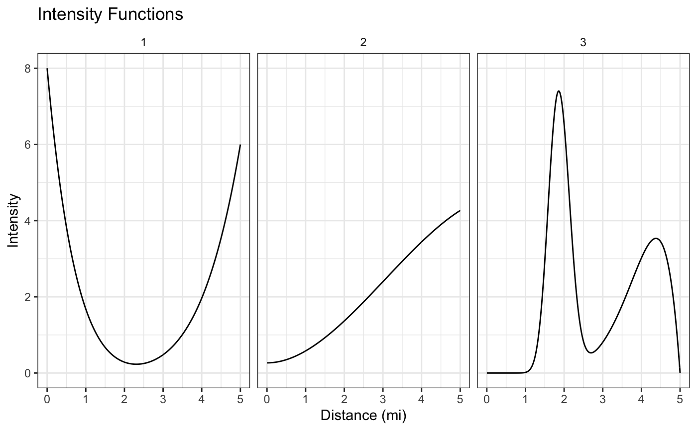
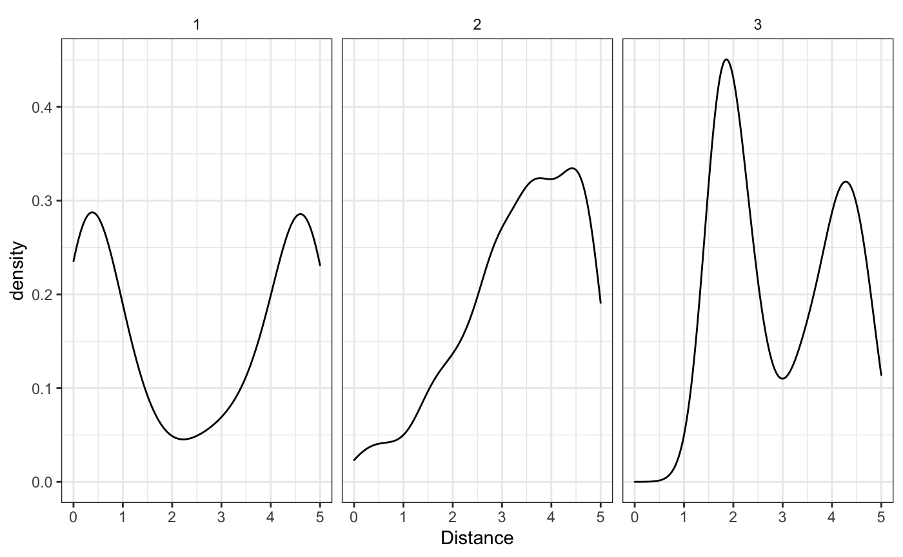
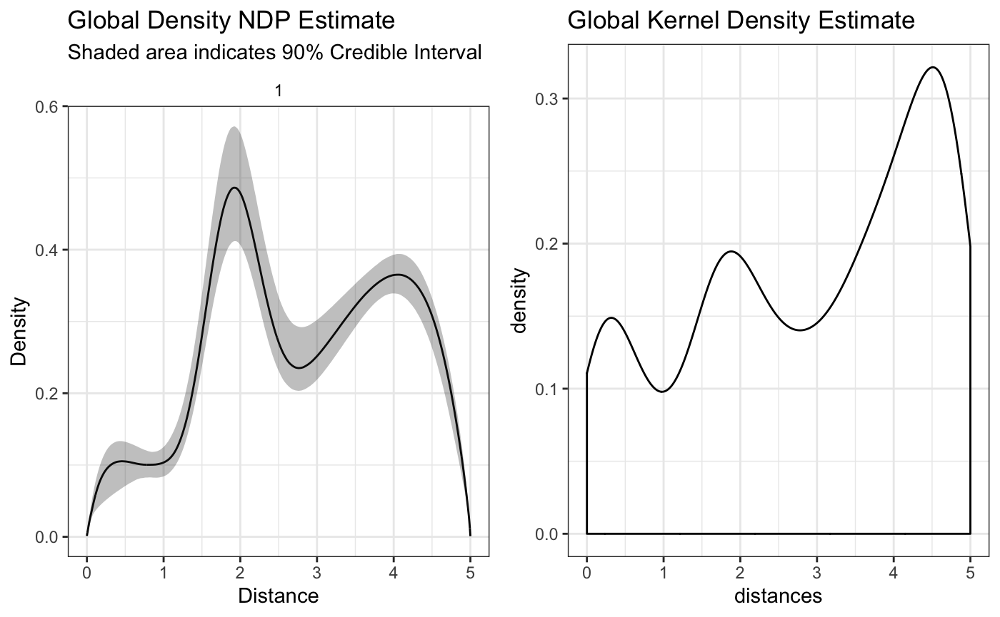
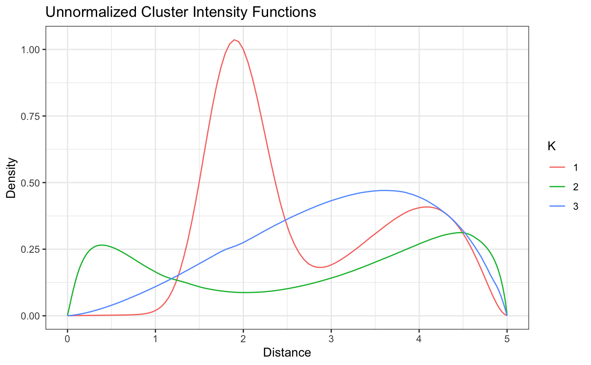
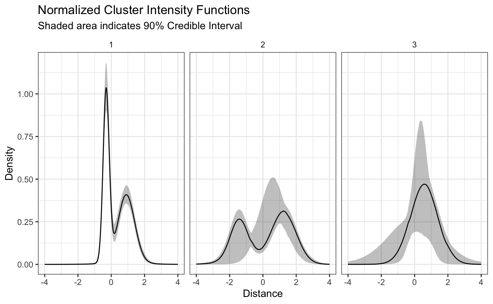
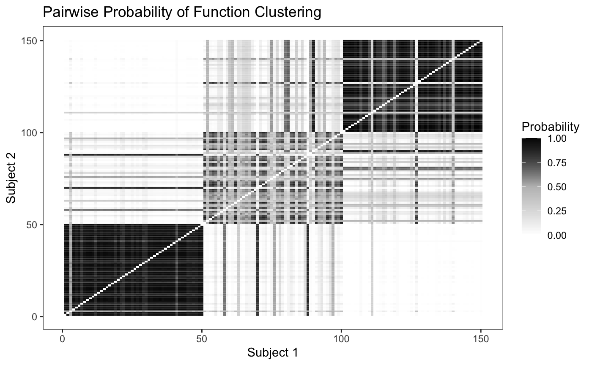
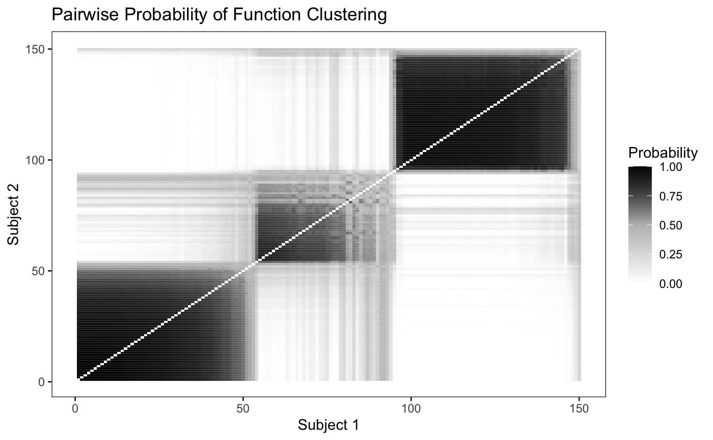

This vignette serves to introduce the bendr R package. bendr is an R package that fits the Nested Dirichlet Process to Built Environment data, modeled as realizations of an Inhomogenous Poisson Process. We begin with substantive motivation and theoretical notation to elucidate some key model components. The data that we generate below is available in the package as school_data.
The motivation for this model comes from a scientific interest in classifying food environments around school or residential environments. If we pick, say, Fast Food Restaurants (FFRs), we could model the rate at which these restaurants occur around schools by modeling their distances from schools as an Inhomogenous Poisson process.
Denote \(r_{ij}\) as the distance between the \(i\)th FFR and \(j\)th school, where all \(r_{ij} <R\). This \(R\) is something like a 1 or 2 mile radius chosen based on data available at hand and the scientific question of interest. If we model these distances as realizations from an inhomogenous poisson process, then the likelihood will decompoase as follows:
\[ p(\{r_{ij}\}|\gamma,f_j(\cdot)) \propto \prod_{j=1}^{J}\gamma_j^{n_j}\exp\{-\gamma_j\}\prod_{i=1}^{n_j}f_j(r_{ij}) \] In the above, \(f_j(\cdot)\) is the spatial FFR incidence density (normalized intensity function) of the \(j\)th school, \(\gamma_j\) is the expected number of FFRs within radius \(R\) and \(n_j\) is the number of FFRs observed around the \(j\)th school within the \(R\) distance boundary.
Since the \(\gamma_j\) and the \(f_j\) are multiplied together, they’re independent and can be modeled separately. The rndpp package offers solutions for both, but the modeling of \(\gamma_j\) in rndpp is akin to a generalized linear model with a gamma distribution and log link function : \(\gamma_j = \exp(x_j^{T}\beta)\). Since this kind of model is fairly common, we won’t spend much time writing about it here, beyond showing what function call you can use to estimate the coefficients, \(\beta\) in rndpp.
In contrast, modeling the \(f_j(\cdot)\) will be our main focus, as it offers us a lot more opportunities to investigate how the rate of FFRs around schools change as a function of distance. Let’s start loading in some libraries and simulating some data before elaborating further.
We’ll simulate distances from the following 3 intensity functions, each composed themselves of a mixture of simpler densities: \[ f_1(d) = \frac{1}{2}\text{beta}(d|1,8) + \frac{1}{2}\text{beta}(d|6,1), \\ f_2(d) = \frac{1}{5}\text{beta}(d|3,2) + \frac{2}{3}\text{beta}(d|3,1) + \frac{2}{15}\text{beta}(d|1,1)\\ f_3(d) = \frac{1}{2}\text{beta}(d|8,2) + \frac{1}{2}\text{dbeta}(d,30,50). \] We’ll plot these below, choosing a 5 mile distance boundary, but any boundary could be used in principal.

Each intensity function corresponds to a different kind of FFR exposure around schools. Schools around the first intensity function will have a lot of FFRs within the first mile or so from their school, but then not many until getting about 4 or more miles from school. Similarly, school’s that have FFRs simulated from cluster 3 will have a lot of FFrs at around 2 miles away from them, but almost none within 1 mile.
These different kinds of patterns may be of scientific interest because they could help explain why certain kids are more likely to go to FFRs and others aren’t.
Let’s assume a constant \(\gamma\) across all the schools, simulating 50 schools from each intensity function.

We can see that the empirical estimates (when we know which cluster each school belongs to), correspond well to the real densities. Now how are we going to model these densities and cluster each school to it’s appropriate cluster?
The Nested Dirichlet Process (NDP) is an extension of the Dirichlet Process, that uses a Dirichlet Process as the base measure for another Dirichlet Process - hence the nested name. The mathematic formulation is abstract, but can be seen below. If you don’t have familiarity with the Dirichlet Process or Random Measures (especially random stick-breaking measures), the \(\delta(\cdot)\) function is a point mass indicator that that only exists at the subscript value and the \(*\) on the \(\pi_k^*\) and other values reflects the idea that there may be multiple duplicate \(\pi_k\)’s and the \(\pi_k^*\) are the unique values. For further reading see Chapter 23 of Bayesian Data Analysis (3rd edition), for now let’s see the math:
\[ G_j \sim Q = DP(\alpha,DP(\rho,G_0))\\ Q = \sum_{k=1}^{\infty} \pi^*_k\delta_{G^*_j(\cdot)}(\cdot) \\ G_j = \sum_{l=1}^{\infty} w^*_{lk}\delta_{\theta_{lk}^*}(\cdot) \]
Essentially we’re going to use the Nested Dirichlet process to draw several different clusters of mixing measures to combine several simpler densities (like the Normal) that will ultimately be used to estimate the inhomogenous poisson process intensity function.
The math is below. For computational purposes we’re going to use a Normal mixing kernel and truncate the infinite mixture above with some finite number of components \(K\) and \(L\), for the two different indices, respectively. If we wanted to use a different mixing measure, the rndpp package also offers the use of a Beta mixing measure with either a global or cluster specific variance parameter. Much of the code we’re using here will be the same, but you can see rndpp::beta_nd_nhpp for more information.
\[ f_j(r) = \int \mathcal{N}(r|\mu,\sigma^2)dG_j((\mu,\sigma^2))\\ G_j \sim Q = \sum_{k=1}^{K} \pi_k^*\delta_{G^*_j(\cdot)}(\cdot)\\ G_j = \sum_{l=1}^{L} w_{lk}^*\delta_{(\mu,\sigma^2)^*}(\cdot) \]
We can use a smaller number of \(L\) and \(K\) stick components for computational convenience and since we know the true number of clusters - in a real data analysis you would want to use more. We’ll set \(\alpha=\rho=1\) to encourage a small number of clusters, set non-informative conjugate priors and fit the model as follows.
fit <- bend(school_id ~ FFR, benvo = school_data, L = 5, K = 5, ## for sake of demonstration speed. Would likely use higher numbers in real world setting base_measure = normal_measure(), ## can also use beta_measure see ?measures iter_max = 5E4, ## To get good resolution, could possibly use more or less depending on convergence burn_in = 4.75E4, thin = 1, fix_concentration = TRUE, ## To avoid collapsing which sometimes occurs with simulated data seed = 34143) #> Beginning Sampling #> ---------------------------------------------------------------------- #> [Chain 1] Beginning of iteration: 1 / 50000 (0%) [Warmup] #> [Chain 1] Beginning of iteration: 5000 / 50000 (10%) [Warmup] #> [Chain 1] Beginning of iteration: 10000 / 50000 (20%) [Warmup] #> [Chain 1] Beginning of iteration: 15000 / 50000 (30%) [Warmup] #> [Chain 1] Beginning of iteration: 20000 / 50000 (40%) [Warmup] #> [Chain 1] Beginning of iteration: 25000 / 50000 (50%) [Warmup] #> [Chain 1] Beginning of iteration: 30000 / 50000 (60%) [Warmup] #> [Chain 1] Beginning of iteration: 35000 / 50000 (70%) [Warmup] #> [Chain 1] Beginning of iteration: 40000 / 50000 (80%) [Warmup] #> [Chain 1] Beginning of iteration: 45000 / 50000 (90%) [Warmup] #> [Chain 1] Beginning of iteration: 47501 / 50000 (95%) [Sampling] #> [Chain 1] Beginning of iteration: 50000 / 50000 (100%) [Sampling]
The ndp model object returned by bend contains the parameters of interest so that the helper functions can be called on them easily. For example, we can look at the \(\pi_k\) parameters that denote the probability of a school being assigned to the \(k\)th cluster.
pi_lbls <- grep(x=rownames(summary(fit)),pattern = "pi",value = T) summary(fit)[pi_lbls,] #> mean sd 10% 25% 50% 75% #> pi K:1 0.35636227 0.04805170 0.2953384196 0.323297353 0.35443697 0.38816923 #> pi K:2 0.31258025 0.09911260 0.1842724156 0.283651160 0.34012598 0.37475824 #> pi K:3 0.19634931 0.12585637 0.0129691683 0.057232876 0.22961861 0.29221123 #> pi K:4 0.09592748 0.12069701 0.0009782762 0.003972197 0.02030616 0.20435625 #> pi K:5 0.03878069 0.06992952 0.0008736198 0.002996097 0.01059909 0.03468508 #> 90% n_eff Rhat #> pi K:1 0.4192994 1104.57114 0.9996312 #> pi K:2 0.4042116 44.43043 1.0058677 #> pi K:3 0.3455403 21.75332 1.0504403 #> pi K:4 0.2909816 28.25380 1.0001651 #> pi K:5 0.1157215 11.04863 1.0308863
It looks like there may be some mild convergence problems in \(\pi_3\), or it could simply be label switching, a common problem with Mixture Models. This may or may not be an issue depending on what the inferential goals are.
One way to assess label switching would be to check the density estimates, beginning with an estimate of the global density estimate (averaging over all clusters’ densities):
plot(fit,'global') + raw_global_dens_estimate

The above plot looks similar to the empirical estimate - a good sign. While the height might not be the same, we have to remember that since we’re using a normal mixing measure, our density estimates are only proportional to the real density unless we explicitly correct for them. This might be a good reason to try the beta mixing measure instead, though it should be noted that since the beta mixing measure is not conjugate, its sampling is typically less efficient.
Let’s now see what our estimates of the different plots look like. As you can see from the summary of the pi’s there are nonzero means for all five probabilities, but the medians of the 4th and 5th cluster are pretty small. We only want to look at the clusters that have a meaningful \(\pi_k\). We can use the plot_cluster_densities, accessible as the default plot method. This function has the argument pi_threshold to allow users to only look at clusters with a certain probability of assignment. The default is 0.1, which should be sufficient in this case.
plot(fit,style = 'color')

This looks good! Both the u shaped intensity functions are well defined and we can tell that even though the monotonicaly increasing intensity function has a decay at the end of the boundary, likely because of the edge effect, the model is still able to capture the general pattern.
It is important to note that since we transformed the distances, the previous plot of the densities does not show the “true” densities, but only densities that are proportional on the domain. The true densities can be plotted using the same function with the argument transform = TRUE as listed below.
plot(fit,style='facet',transform = TRUE)

Here we can see some of the label switching mentioned earlier showing up in the credible intervals. If we wanted to try and remove that completely, we could try running the model for longer, or running a label switching algorithm on the output.
In order to determine how well the model is able to discriminate between the differing clusters, we can plot the pairwise probability of each school being assigned to the same cluster as another school. Since we simulated fifty schools from each intensity function we would expect to see fifty by fifty blocks of high probability along the diagonal.
plot_pairs(fit,sort = F)

Looking at the plot, we can see that the model is able to discriminate between the differing intensity functions fairly well, though it has a hard time discriminating between the second and third cluster. We can also sort the pairwise probability plot to try and identify groups - since in real world data we won’t know where the “true clusters” really are.
plot_pairs(fit,sort = T)
